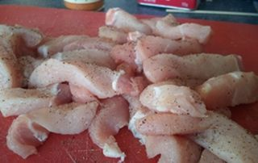
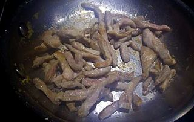
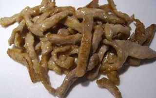
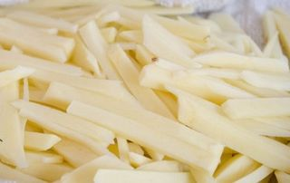
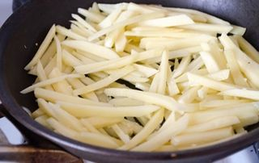
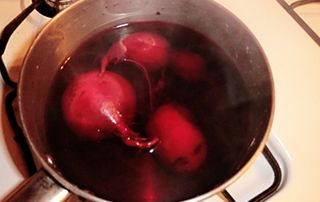
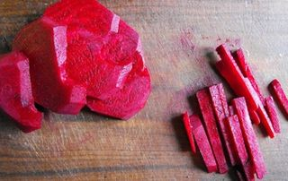
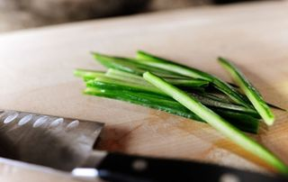
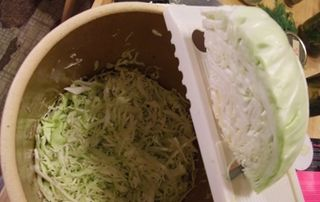
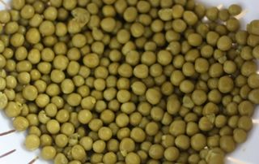

Шаг 1: подготавливаем мясо.

Промываем свинину под проточной водой и выкладываем ее на разделочную доску. Проверяем мясо руками на наличие осколков костей и освобождаем его от жира и пленки, воспользовавшись ножом. Также вырезаем кости, если они есть в мясном ингредиенте и нарезаем свинину вдоль, а затем поперек на одинаковые по размеру небольшие продолговатые кусочки. Мясо слегка солим и перчим и с помощью чистых рук хорошо перемешиваем.

С помощью деревянной лопатки или руками перекладываем наши мясные кусочки в сковороду с разогретым маслом и обжариваем со всех сторон на среднем огне до образования коричневой корочки, периодически помешивая его с помощью того же инвентаря в течение 25 минут, но не более, чтобы мясо не пересушить.

Перекладываем его с помощью столовой ложки в чистую емкость.
Шаг 2: подготавливаем картофель.

С помощью ножа очищаем картофель от кожуры и промываем его под проточной водой. Так как овощной ингредиент мы будем нарезать соломкой, важно брать клубни не только одинаковой величины, но круглые и ровные, чтобы соломка получилась одинаковой по размеру. Выкладываем картофель на разделочную доску и с помощью ножа разрезаем его вдоль на несколько одинаковых по толщине пластинок равных 3-5 миллиметров. Затем каждую пластинку разрезаем с помощью того же острого инвентаря на несколько соломок. Важно помнить, что соломки должны быть также одинаковой толщины, чтобы они могли все прожариться равномерно.

В свободную сковороду с подогретым растительным маслом на среднем огне перекладываем наш подготовленный ингредиент, и с помощью лопатки периодически перемешивая его, жарим до образования золотистой румяной корочки. Желательно картофельную соломку жарить небольшими порциями, чтобы она меньше соприкасались друг с дружкой. Таким образом, картофель не только хорошо и равномерно обжарится на сковороде, но и время приготовления его сократится. Готовый ингредиент перекладываем на свободную тарелку. Внимание: если вы не рассчитали количество растительного масла, и картофельная соломка получилась жирной, тогда можете воспользоваться бумажным полотенцем и переложить картофель вначале на него для удаления лишнего жира.
Шаг 3: подготавливаем свеклу.

Свеклу очень тщательно промываем под теплой проточной водой с помощью кухонной щеточки для удаления с нее земли или грязи. В кастрюлю наливаем холодную воду из расчета, чтобы она покрывала овощ во время варки и добавляем в нее немного уксуса, чтобы свекла в процессе варки не потеряла свой цвет. Перекладываем корнеплод вместе с хвостиком в емкость с жидкостью. Варим свеклу на среднем огне в течение 40-60 минут, при этом не накрываем кастрюлю с ингредиентом крышкой. Готовность овоща можно проверить с помощью ножа, проткнув им корнеплод. Если свекла будет мягкой, значит - она готова. С помощью вилки вынимаем наш ингредиент из кастрюли с кипятком и опускаем его в холодную воду, для того чтобы овощ легче было очищать от кожуры.

Затем с помощью ножа очищаем свеклу от шкурки и, переложив ее на разделочную доску, нарезаем ее соломкой тем же методом, что и картофель. Перекладываем свекольную соломку в свободную тарелку.
Шаг 4: подготавливаем морковь.
Морковь хорошо промываем под проточной водой и с помощью ножа очищаем ее от шкурки. Затем перекладываем на разделочную доску и с помощью острого инвентаря вначале нарезаем ее вдоль на тонкие пластинки приблизительно 3 миллиметра каждая. Затем, положив пластинки одна на другую, нарезаем ее соломкой. Если у вас получается сильно длинная соломка, тогда с помощью того же инвентаря разрезаем ее поперек.
Шаг 5: подготавливаем огурцы.

Овощ промываем под проточной водой и перекладываем на разделочную доску. С помощью ножа нарезаем огурец тонкими пластинами вдоль. А затем, положив несколько пластин друг на друга, нарезаем соломкой и перекладываем в свободную тарелку. Важно: так как ингредиент довольно сочный, нарезать его желательно перед самой подачей нашего блюда, чтобы он не начал стекать.
Шаг 6: подготавливаем капусту.

Капусту вручную очищаем от верхних более грубых или поврежденных листьев и промываем под проточной водой. Перекладываем на разделочную доску и с помощью ножа разрезаем кочан вдоль кочерыжки. Если разрезать капусту иначе, тогда капустные листья могут рассыпаться и у нас не получится красивая соломка. Затем каждую часть овоща рассекаем поперек листовых жилок с помощью шинковки на тонкую стружку шириной не более 4-5 миллиметров.
Шаг 7: подготавливаем горошек.

Перекладываем консервированный горошек из банки в сито и промываем теплой кипяченой водой из кружки. Когда вода стечет, перекладываем его из сита в чистую тарелку.